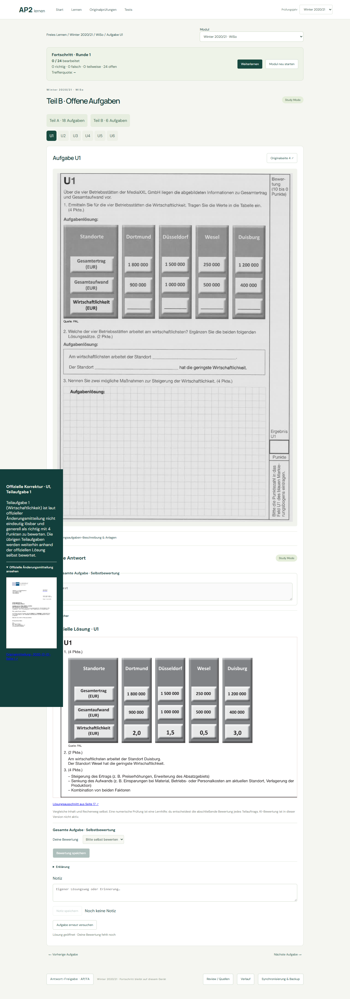
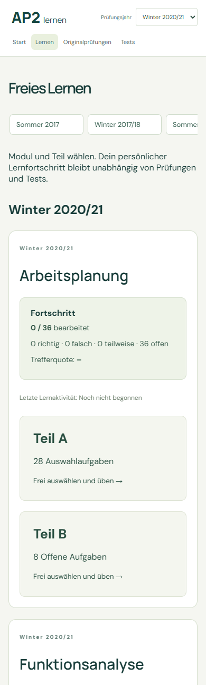

Originalaufgaben, offizielle Antwortquellen und U-Lösungen. Keine offenen Reviews; keine fehlenden Anlagen.
| Modul | Aufgaben | MC | U | Review | Links |
|---|---|---|---|---|---|
| arbeitsplanung | 36 | 28/28 | 8/8 | 0 | Preview / Overlay · Lernen |
| funktionsanalyse | 36 | 28/28 | 8/8 | 0 | Preview / Overlay · Lernen |
| wiso | 24 | 18/18 | 6/6 | 0 | Preview / Overlay · Lernen |
Wiederverwendete Engines: portrait-explicit-regions / official-ring-grid. 94 neue Seiten inklusive offizieller Korrekturmitteilung. Alte PDF-Neuscans: 0. Wiederholung: alle sechs Verarbeitungsstufen übersprungen.
Validierungsbericht · 18 Lern-/Prüfungs-/Filterchecks · Fortschritt, Notizen, Mobilansicht
Die Teilaufgabe ist nicht eindeutig lösbar und offiziell generell mit 4 Punkten zu bewerten. Der Hinweis erscheint bei der Lösung und nach der Prüfungsabgabe, nicht während der Bearbeitung.
Originalmitteilung vom 01.12.2020

Sommer 2020 AP wurde zuvor mit bestätigter Q7/Q8-Zuordnung veröffentlicht: Bestätigung und Prüfspur.